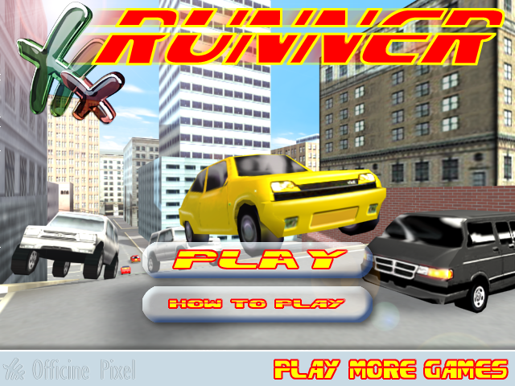

FFX Runner
playable again
The mid-2000s Shockwave 3D car chase by Officine Pixel, ported to the modern browser. No plugins.
ffx.skoba.eu
The mid-2000s Shockwave 3D car chase by Officine Pixel, ported to the modern browser. No plugins.
